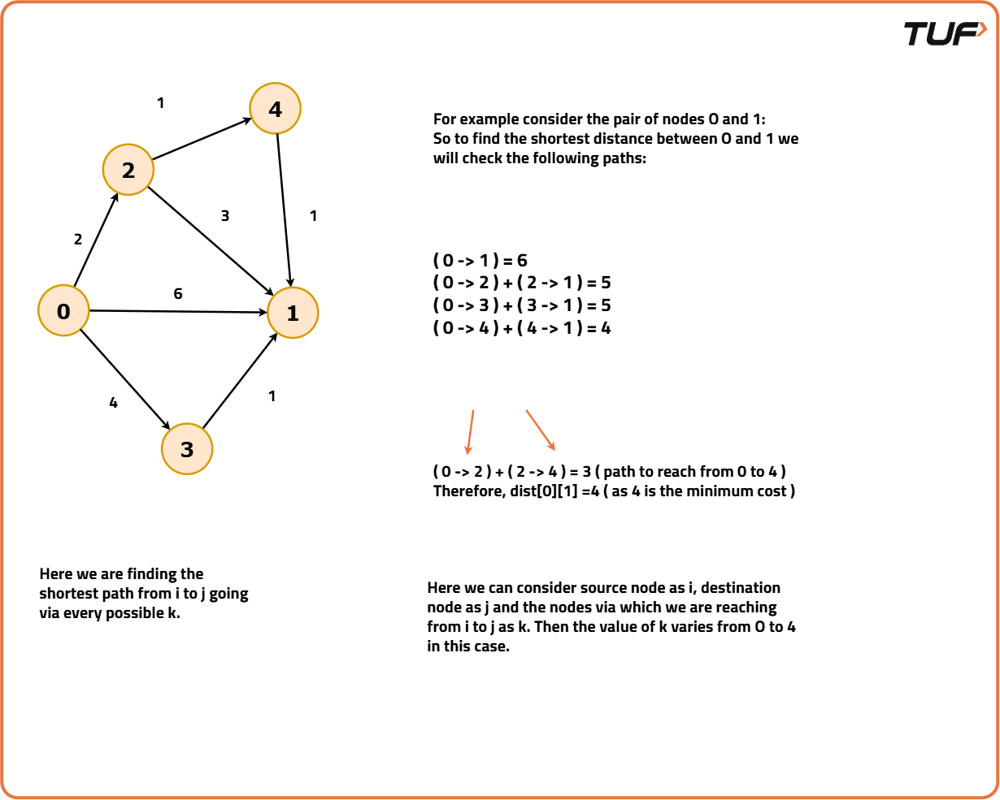
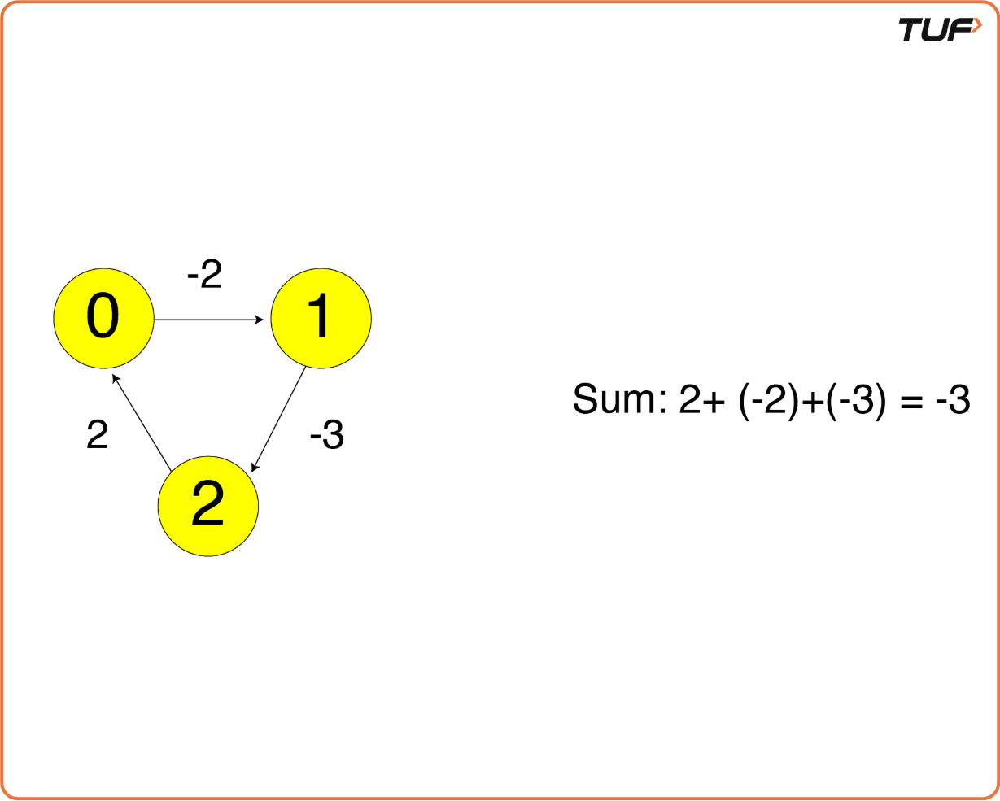
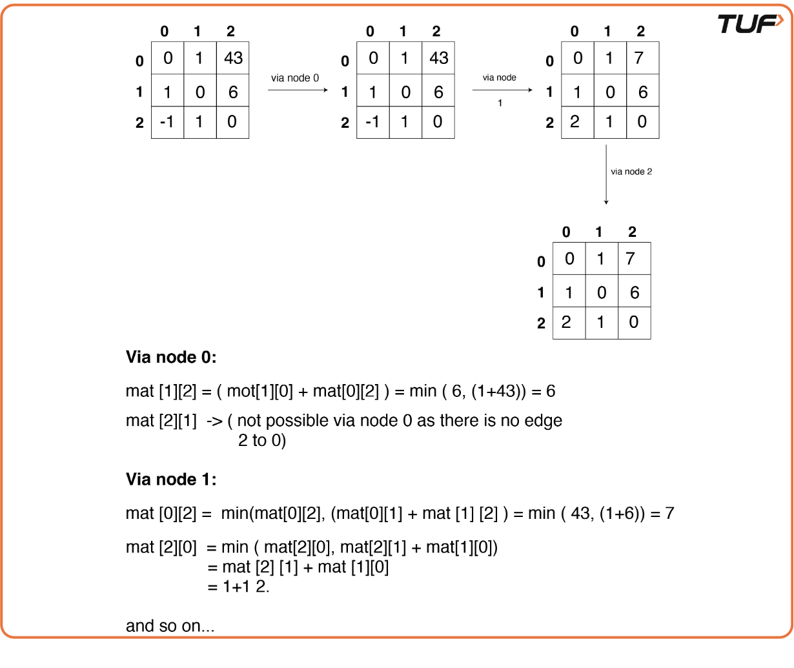

Floyd Warshall Algorithm: G-42
Problem Statement: Given a graph of V vertices numbered from 0 to V-1. Find the shortest distances between every pair of vertices in a given edge-weighted directed graph. The graph is represented as an adjacency matrix of size n x n. Matrix[i][j] denotes the weight of the edge from i to j. If matrix[i][j]=-1, it means there is no edge from i to j.
Examples
Example 1: Input: matrix = [[0, 2, -1, -1], [1, 0, 3, -1], [-1, -1, 0, 1], [3, 5, 4, 0]] Output: [[0, 2, 5, 6], [1, 0, 3, 4], [4, 6, 0, 1], [3, 5, 4, 0]] Explanation: The matrix stores the shortest distances between vertices. After applying the algorithm (like Floyd-Warshall), the shortest distances between all pairs of vertices are computed. The updated matrix shows the shortest distances, e.g., distance from vertex 0 to vertex 2 is 5, from vertex 1 to vertex 3 is 4, and so on. Example 2: Input: matrix = [[0, 25], [-1, 0]] Output: [[0, 25], [-1, 0]] Explanation: The matrix already contains the shortest distances. Since no further updates are needed, the matrix remains the same.
Disclaimer: Here is the practice link to help you assess your knowledge better. It's highly recommend trying to solve it before looking at the solution.
Approach
Algorithm
- Initialize a distance matrix to store the minimum distance between each pair of nodes, using the adjacency matrix of the graph. If there is an edge between two nodes, set the corresponding distance; if no edge exists, set the distance to infinity (or a large value).
- Iterate through all possible nodes as intermediate nodes. For each intermediate node
k, update the distance matrix by checking all pairs of nodes(i, j): - If
kis not an intermediate node in the path fromitoj, skip that iteration. - If there is no direct edge between
iandj, updatedist[i][j]todist[i][k] + dist[k][j]. - If there is a direct edge between
iandj, updatedist[i][j]to the minimum ofdist[i][j]anddist[i][k] + dist[k][j]. - Continue iterating through all the possible intermediate nodes until the entire distance matrix is updated.
- At the end of the process, the distance matrix will contain the shortest distances between all pairs of nodes. If a node is unreachable, its distance will remain as infinity (or -1 if used to denote unreachable nodes).



Code
#include <bits/stdc++.h>
using namespace std;
class Solution {
public:
/* Function to find the shortest distance
between every pair of vertices. */
void shortest_distance(vector<vector<int>> &matrix){
// Getting the number of nodes
int n = matrix.size();
// For each intermediate node k
for(int k=0; k<n; k++) {
// Check for every (i, j) pair of nodes
for(int i=0; i<n; i++) {
for(int j=0; j<n; j++) {
/* If k is not an intermediate
node, skip the iteration */
if(matrix[i][k] == -1 ||
matrix[k][j] == -1)
continue;
/* If no direct edge from
i to v is present */
if(matrix[i][j] == -1) {
// Update the distance
matrix[i][j] =
matrix[i][k] + matrix[k][j];
}
/* Else update the distance to
minimum of both paths */
else {
matrix[i][j] =
min(matrix[i][j] ,
matrix[i][k] + matrix[k][j]
);
}
}
}
}
}
};
int main() {
vector<vector<int>> matrix ={
{0, 2, -1, -1},
{1, 0, 3, -1},
{-1, -1, 0, -1},
{3, 5, 4, 0}
};
/* Creating an instance of
Solution class */
Solution sol;
/* Function to find the shortest distance
between every pair of vertices. */
sol.shortest_distance(matrix);
// Output
int n = matrix.size();
cout << "The shortest distance matrix is:\n";
for(int i=0; i < n; i++) {
for(int j=0; j < n; j++) {
cout << matrix[i][j] << " ";
}
cout << endl;
}
return 0;
}Complexity Analysis
Time Complexity: O(V^3), where V is the number of vertices in the graph. This is because we have three nested loops iterating over the vertices.
Space Complexity: O(V^2), where V is the number of vertices in the graph. This is due to the storage of the distance matrix, which is of size V x V.